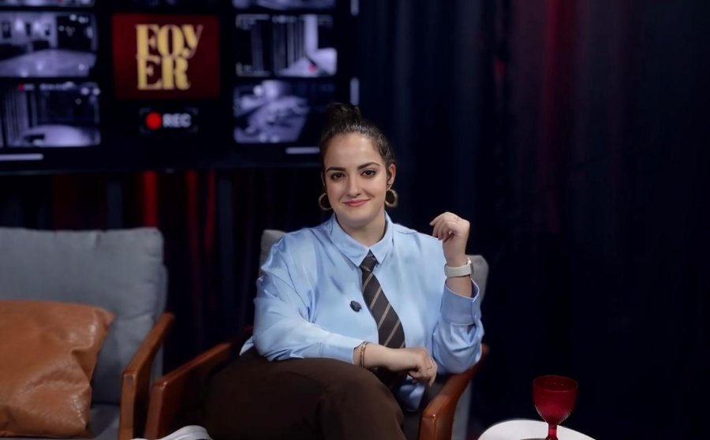

Isabel Branquinha
Isabel Branquinha é jornalista, apresentadora, dramaturga e produtora cultural, cofundadora do Foyer e diretora de conteúdo do veículo. Graduada em Jornalismo, com especializações em Dramaturgia e Marketing, construiu sua carreira na intersecção entre comunicação, artes cênicas e produção cultural.
À frente do Programa do Foyer, entrevista artistas, criadores e profissionais que movimentam a cena teatral brasileira, conduzindo conversas que vão além da divulgação de espetáculos e exploram os processos criativos, as trajetórias e as transformações humanas por trás da cena. Também assina reportagens, críticas e coberturas especiais, com foco na difusão e valorização da cultura.
Como dramaturga, desenvolve projetos autorais para teatro e, como produtora e estrategista de comunicação, atua ao lado de artistas, companhias e instituições culturais na criação de conteúdos, posicionamento e desenvolvimento de projetos. Seu trabalho é guiado pelo interesse em aproximar o público da arte por meio de um jornalismo cultural acessível, sensível e comprometido com a cena contemporânea.